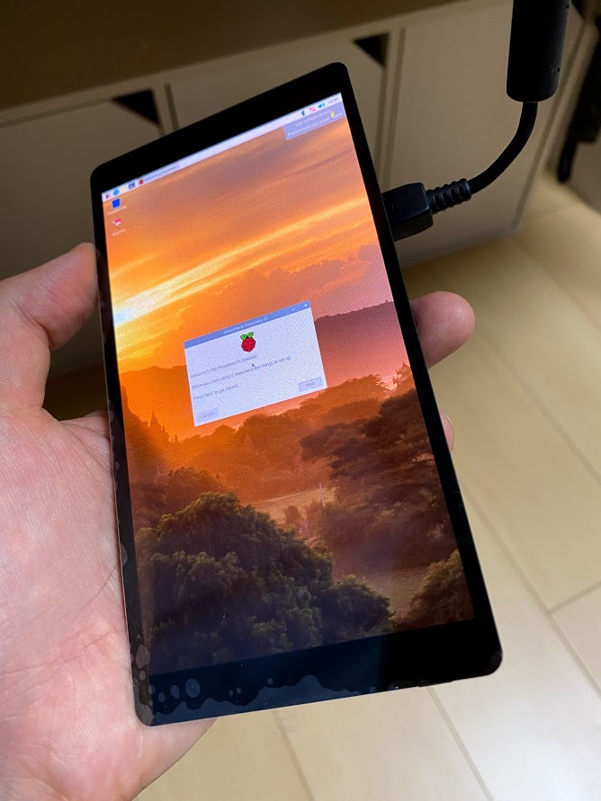
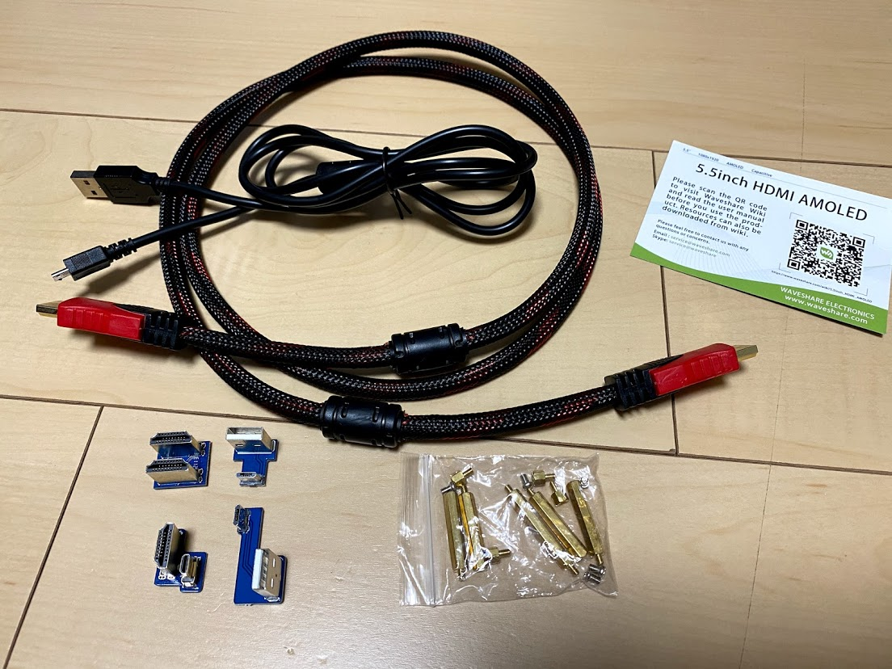
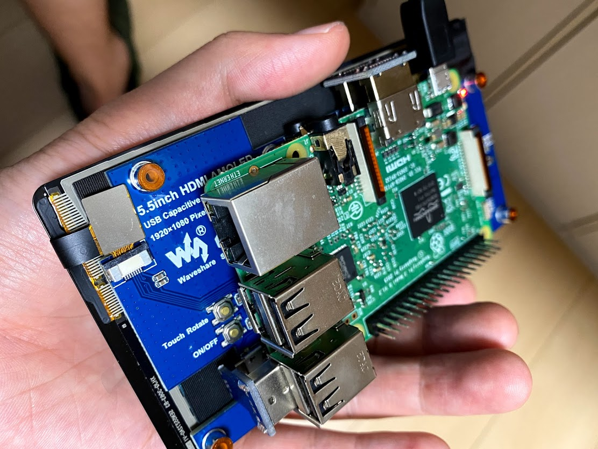
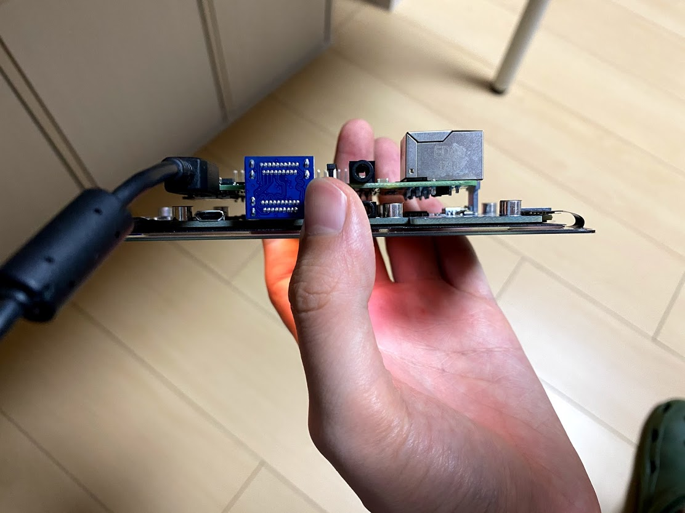
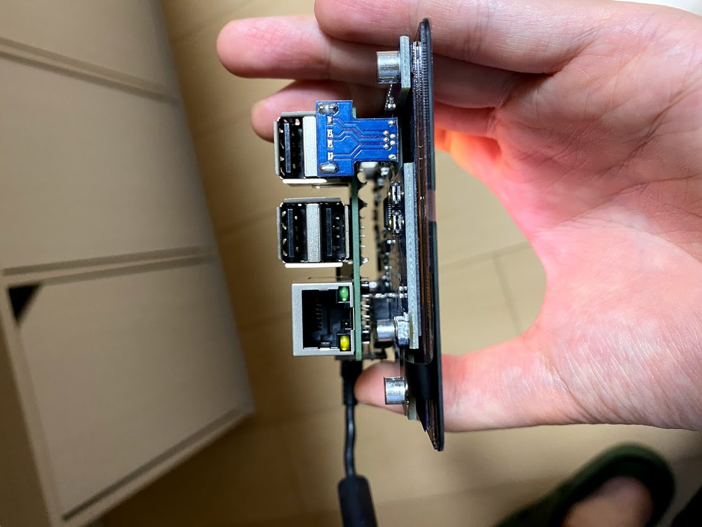
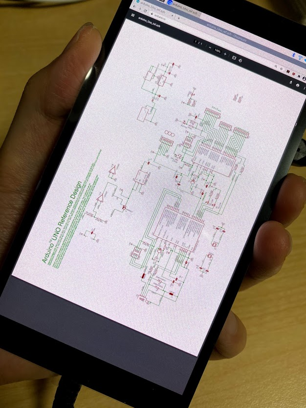
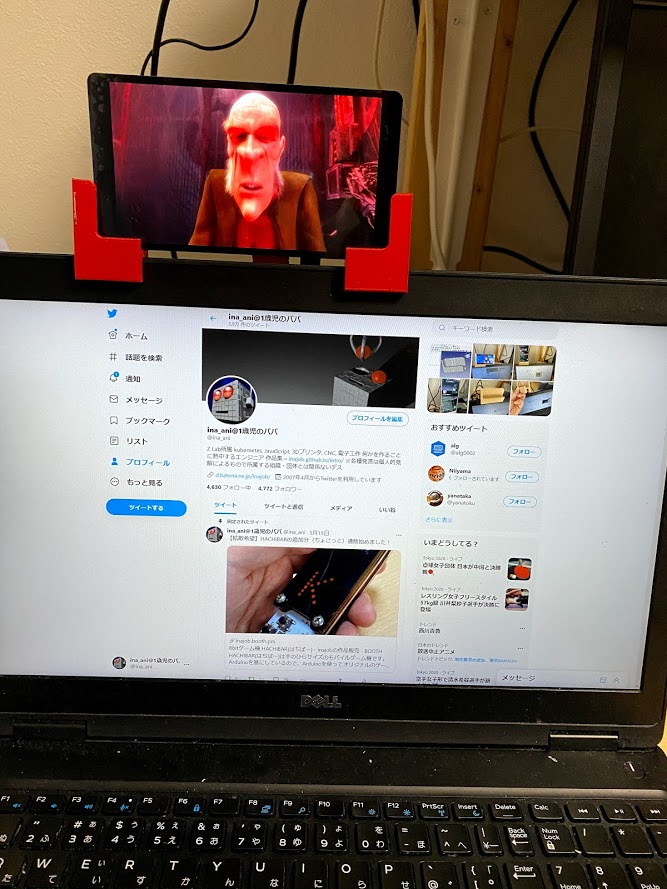
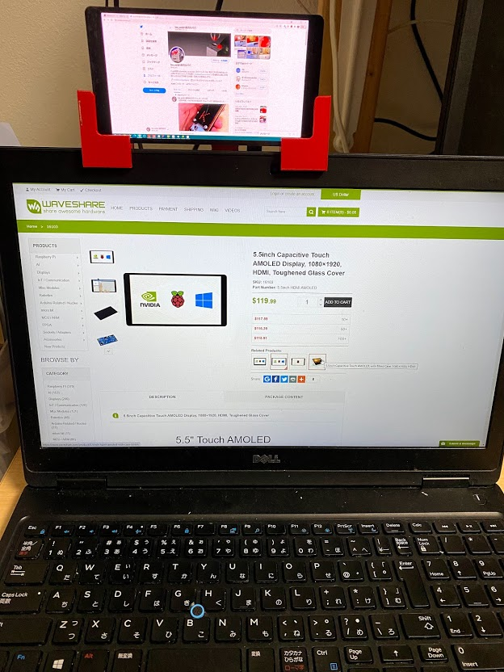
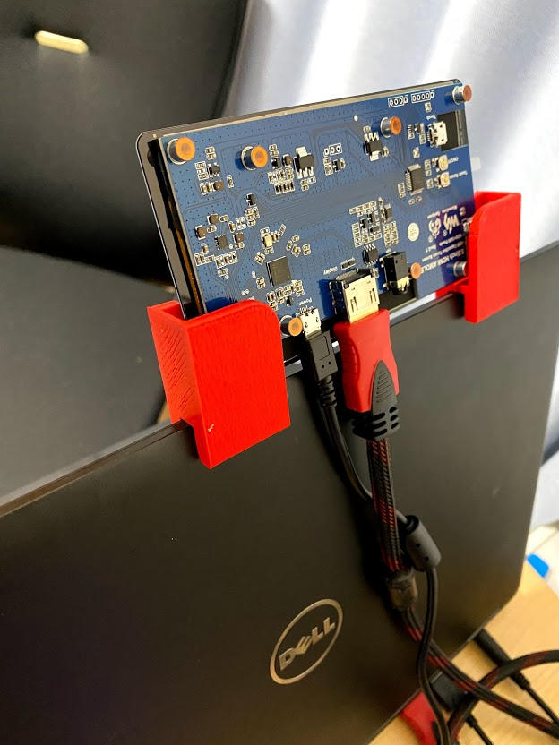
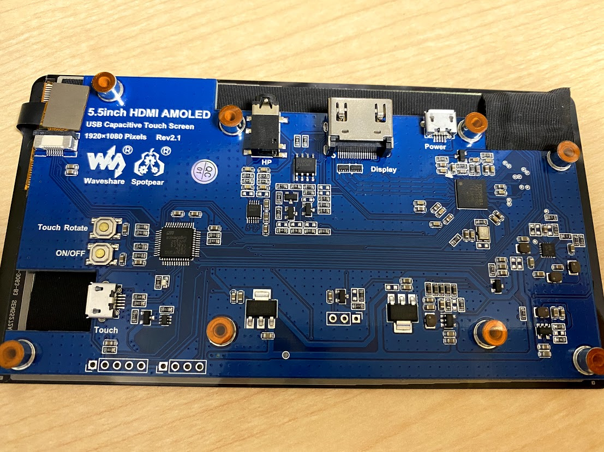

この記事はBanggoodの提供でお届けします。
以前紹介したようにこのブログはBanggoodと提携させていただいており、今回紹介するWareshare® 5.5 Inch AMOLED HDMI Displayも、Banggoodからいただいたものとなります。（Wareshare® 5.5 Inch AMOLED HDMI Displayのレビューがしたい！と言ったのは自分なので、Banggoodが無理やりこの商品を押しているわけではなく、inajobの一押しアイテム！、という感じです。）
Wareshare® 5.5 Inch AMOLED HDMI Display とは
いわゆるRaspberry Pi用のHDMIディスプレイです。特筆すべきは1080×1920という高解像度です。 加えて静電容量タッチセンサーにより、画面を触ることでPCの操作ができます。

この高解像度でありながら、ディスプレイのサイズは5.5インチと小型で、まるでスマートフォンのディスプレイのようです。（というかスマートフォンのディスプレイを転用してこの製品を作ったように見えます。)
付属品
必要なものはだいたい入っています

- HDMIケーブル
- USBケーブル
- コの字型HDMI端子 2種
- コの字型USB端子 2種
- ディスプレイ固定用スペーサー
Raspberry Piと接続してみる
まずは看板通りRaspberry Piにつなげてみます。説明書には「driver free」と書かれていますが、少しだけ設定が必要です。
手元にはRaspberry Pi3 B+があったのでそれで試しましたが、最新のRaspberry Pi 4Bや 小型のRaspberry Pi Zeroなどとも接続できるようです。
設定は本家のWikiに書かれていますが、/boot/config.txtに設定を少しだけ書く必要があります。
付属品のコの字型のHDMIと、USB端子を使うことで、「スマートフォン」とまではいきませんが、非常にコンパクトにRaspberry Piと接続することが出来ます。



高解像度ディスプレイなので、かなり細かい情報を表示することが出来ます。

ただしRaspberryPiの標準のデスクトップはマウスで操作するように作られているため、タッチパネルでの操作は非常に困難でした。これ専用のアプリケーションを書く必要があるでしょう。
WindowsノートPCと接続してみる
次にWindowsノートPCに接続してみました。なんと、何も設定せずとも認識してくれました。
ちょうどサブディスプレイが欲しかったので、手元の3Dプリンタを使ってノートPCのモニタの上に載せられるようにしてみました。

(再生している動画はこちら https://www.youtube.com/watch?v=TLkA0RELQ1g )

Twitterを表示してみた例（ちょっと小さくて読みづらいかな）

裏面はこんな感じです。
シンデレラフィット！ と言いたくなるような使い勝手です。
個人的にはこのディスプレイはRaspberry Piとつなげるよりも、普段使いのノートPCのサブディスプレイにするのにちょうど良さそうです。
（一方手元のMacBookにHDMIで接続してみましたがうまく認識されませんでした。）
基板をよく見てみる
ディスプレイについては、全くの無知ですが、一応むき出しの基板に乗っているICを見てみました。

-
TOSHIBA 358779XBG
- 中国製品には珍しい東芝製のICです。これがHDMIの制御をしているようです
-
FT24C02A
- EEPROMのようですが、何に使っているかはわかりませんでした
-
GD32F350CBT6
- 最近話題（？）のGigaDrive製のARMマイコンです。タッチパネルの制御をしているようです
汎用のARMマイコンが乗っているのがちょっと意外でした。うまく書き込みができると、タッチパネルの動作を変更できるかもしれません。
まとめ
ちょっとお値段はしますが、この高密度で高解像度なディスプレイの価格としては妥当なものだと思います。
給電がUSBポートでできるという点も利用しやすくて良いです。
RaspberryPiを使ったリッチなガジェットのお供にはもちろん、普段使いのWindowsPCのサブディスプレイとしても常用できる、一石二鳥のガジェットだと感じました。
クーポンコード
さて、ここまで紹介してきたWareshare® 5.5 Inch AMOLED HDMI Displayですが、今回Banggoodの提供という事で、$96.99で購入できるクーポンを頂いています。
コード： BG0e4c34 (8/31まで)
Wareshare® 5.5 Inch AMOLED HDMI Displayをカートに入れ、チェックアウト後にこのクーポンコードを入力することで割引を受けることが出来ます。
有効期限は2021/8/31なので、買いたい方はお早めにどうぞ！（加えて、在庫に限りがあると思うのでお早目に！）
Banggoodでは、8月の「日本限定日替わりセール」ということで、ほかにも様々なガジェットを格安で販売しているようです。気になる人はのぞいてみてください。


関連記事